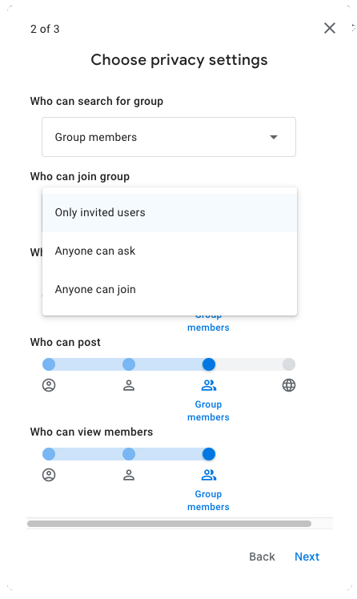

13 Takım İletişimi
Ekibinizin iletişim kurması gerekecek. Yapılması gereken iki temel karar vardır: duyuruların nasıl yapılacağı ve tartışmaların nasıl yapılacağı. Ayrıca, hemen kullanmayı planlamıyor olsanız bile, muhtemelen bir dizi sosyal medya hesabı oluşturmak isteyeceksiniz.
13.1 Duyurular
E-posta muhtemelen duyuru yapmanın en yaygın yoludur.
Tüm üyelere tek tek e-posta göndermektense, bir e-posta listesi kullanmak neredeyse her zaman tercih edilir. (İlkini başlangıçta yapmanız gerekiyorsa; lütfen herkese cevap yazdığınız bir fiyaskoyu önlemek için CC e-postalarını saklayın.) Yönetilen bir e-posta, kişilerin kaydolmasına ve kendilerini listeden çıkarmasına olanak tanır ve geçerli istenmeyen posta önleme yasalarına uyduğunuzdan emin olmanızı sağlar.

- Google Gruplar
- Kurulması çok kolay
- Sınırsız üye sayısı ve mesaj
- Basit arayüz; istatistiklerin elde edilmesi daha zor
- MailChimp
- ücretsiz hesapta 500 kişi, ayda 2500 e-posta ve günde 500 e-posta sınırı vardır
- Kâr amacı gütmeyen kuruluşlar için ücretli hesaplarda %15 indirim
- E-posta erişimiyle ilgili güzel şablonlar ve istatistikler
- WordPress
- WordPress’te (Section 15.3.3) bir web sitesi oluşturacaksanız, bunu üyeleri yönetmek ve e-posta göndermek için de kullanabilirsiniz.
Muhtemelen ilk başta geçici duyurular için posta listenizi kullanacaksınız. Organizasyonunuz olgunlaştıkça, muhtemelen düzenli bir haber bülteni oluşturmak isteyeceksiniz.
13.2 Tartışmalar
Grubunuzun tartışacak çok şeyi olacak ve bunu yapmak için bir foruma ihtiyacı olacak. Bir platform seçerken dikkate alınması gereken bazı şeyler:
- Platform tüm üyeler için erişilebilir mi?
- Üyeler, mesajlar, zaman, kanallar, arşivleme açısından limitler nelerdir?
- Hizmet ücretsiz mi ve ekibiniz büyüdükçe aynı şekilde devam etmesi muhtemel mi?
- Platform, projelerinizin karmaşıklığı için yeterli kanal ve mesaj dizisi sağlıyor mu? Örneğin insanlar sadece ilgilendikleri kanallara abone olabilir mi?
- Hizmet, kullanmak isteyebileceğiniz diğer araçlarla entegre oluyor mu? (ör. Google Drive, takvimler)
- Entegre görüntülü sohbete ihtiyacınız var mı? Çoğu akademisyenin kurumsal Zoom’a erişimi vardır, bu nedenle bunu sanal toplantılar için kullanabilir.
Slack eskiden büyük ekip bilimi için başvurulacak platformdu. Ücretsiz bir grup oluşturmak ve insanların katılmasını sağlamak kolaydı. Ancak, ücretsiz sürüm için geçmiş gönderileri görüntülemeye ilişkin 90 günlük bir sınırın kısa süre önce tanıtılmasıyla, artık onu tavsiye edemiyorum. Akademik indirim %85’tir, ancak bu yine de aktif kullanıcı başına aylık 0,78 ABD doları etmektedir. Bu da büyük, aktif ekiplerin karşılanmasını zorlaştırır.
Discord 90 gün sınırı olmaksızın Slack’e benzer birçok özelliğe ve benzer bir kullanıcı arayüzüne sahiptir. Ayrıca sesli sohbet özelliği vardır.
Mattermost açık kaynaklı bir Slack klonudur, ancak denemedim.
Basecamp, hakkında iyi şeyler duyduğum ama denemediğim bir proje yönetimi uygulaması. Yalnızca 20 kullanıcıya kadar ücretsizdir ve bundan sonra her büyüklükteki ekip için aylık 99 ABD doları ücreti vardır. Bu nedenle muhtemelen yeni bir ekip için ilk tercih değildir.
Microsoft Teams, eğer üniversiteniz zaten kullanıyorsa iyi bir alternatif gibi görünebilir, ancak yeni bir kuruluşa kaydolmak zor olabilir ve masaüstü uygulaması çoğu insan için bir felakettir.
GitHub Discussions, grubunuzun zaten bir kodlama odağı varsa ve çoğu üyenin bir github hesabı varsa veya oluşturmak için itirazı yoksa iyi bir çözüm olabilir (bkz. Section 14.5). Açık kaynaklı yazılımlar için başvurulan depo olmasına rağmen GitHub, Microsoft’a aittir, bu nedenle fikrinizi etkileyebilir. Code Check Club şu anda duyurular için github tartışmalarını kullanıyor (üyeler bir e-posta özetine dahil olabilir), ancak Slack’ten ayrıldığımızdan beri gerçek tartışmalar gerçekten azaldı.
Canvas normalde dersleri yönetmek için kullanılır, ancak parlak zekalı Erin Buchanan, bu açık kaynaklı VLE/LMS yazılımını PSA Üye sitesi için uyarladı. Yeni bir grup için tavsiye edeceğim bir şey değil, ama büyüdükçe düşünmeniz gereken bir şey. Üyeliği, e-posta duyurularını ve proje yönetimini izlemek için hepsi bir arada bir çözüm olabilir, ancak siteyi yönetmek için bazı uzman becerilere ve kaynaklara sahip bir üye gerektirir.